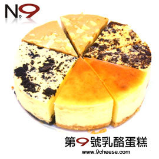

<body background="12.jpg">
<a name=90534208-2>
<font face="標楷體"><h2>第9號乳酪蛋糕</h2></font>

從最初的三個配方原型，經過試吃票選確定最被接受的原型後，繼而調整甜味，嘗試不同的乳酪種類，<br>
解決入口後殘留於咽喉的感覺，凡此種種若不一次又一次的嘗試，唯恐錯失最佳的成分比例配置，<br>
就這樣從1號、2號......直到第9號乳酪蛋糕，才完成心裡那個讓人魂縈夢繫的夢幻味道，第9號是否能夠被顧客所接受仍待時間考驗，<br>
不過對我們來說，從一個念頭裡的蛋糕直到成品，過程有如創作般叫人深深著迷，也許這才是烘培的樂趣與好玩的地方。<br><hr>

<a href="index.html">首頁</a>
&nbsp;

<a href="90534208-1.html">Costco原味乳酪蛋糕</a>
&nbsp;
<a href="90534208-3.html">雅培米堤法式烘焙</a>
&nbsp;
<a href="90534208-4.html">心得</a>

</body>